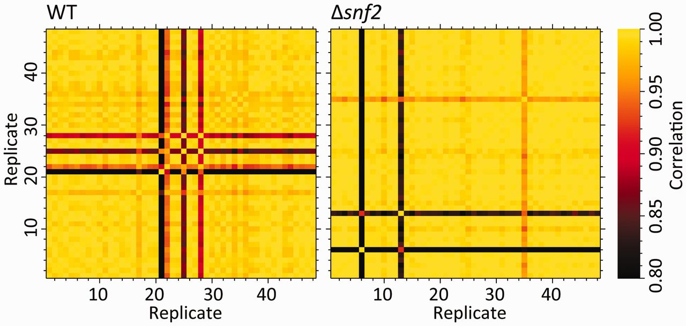

knitr::include_graphics("yeast_48rep_cor_heatmap.jpg")
NIH is asking for authentication of key resources. How does this apply to data analyses?
Robert M Flight ![]()
March 23, 2016
NIH recently introduced a reproducibility initiative, extending to including the “Authentication of Key Resources” page in grant applications from Jan 25, 2016. Seems to be intended for grants involving biological reagents, but we included it in our recent R03 grant developing new data analysis methods. We believe that this type of thing should become common for all grants, not just those that use biological/chemical resources.
There has been a lot of things published recently about the reproducibility crisis in science (see refs). The federal funding agencies are starting to respond to this, and beginning with grants submitted after January 25, 2016, grants are supposed to address the reproducibility of the work proposed, including the presence of various confounding factors (i.e. sex of animals, the source of cell lines, etc). In addition to this, there is a new document that can be added to grants, the Authentication Plan, which as far as I can tell is intended specifically for:
key biological and/or chemical resources used in the proposed studies
Now, this makes sense. Some sources of irreproducibility include, but are not limited to:
I think this is a good thing. What does it have to do with data analysis?
When we were submitting a recent R03 proposal for developing novel data analysis methods and statistical tools, the grant management office asked us about the Authentication of Key Resources attachment, which we completely missed. Upon review of the guidelines, we initially determined that this document did not apply. However, we decided to go ahead and take some initiative.
When dealing with multiple samples from high-throughput samples, there are frequently a few easy ways to examine the data quality, and although it can be hard to verify that the data is what the supplier says it is, which would be true authentication, there are some ways to verify that the various samples in the dataset are at least self-consistent within each sample class (normal and disease, condition 1 and condition 2).
My go-to for data self-consistency are principal components analysis (PCA) and correlation heat-maps. Correlation heat-maps involve calculating all of the pairwise sample to sample correlations using all of the non-zero sample features (those that are non-zero in the two pairs being compared). These heatmaps, combined with the sample class information, and clustering within each class, are a nice visual way to eyeball samples that have potential problems. A simple example for RNA-seq transcriptomics was shown in Gierliński et al., Statistical models for RNA-seq data derived from a two-condition 48-replicate experiment Bioinformatics (2015) 31 (22): 3625-3630, Figure 1.
The other measures they used in this paper are also very nice, in plotting the median correlation of a sample against all other samples, and the fraction of outlier features in a given sample (see figure 2 of Gierlinkski et al). The final measure they propose is not generally applicable to all -omics data however.
PCA on the data, followed by visualizing the scores on the first few principal components, and colored by sample class (or experimental condition) is similar in spirit to the correlation heat-map. In fact, it is very similar, because PCA is actually decomposing on the covariance of the samples, which is very related to the correlations (an early algorithm actually used the correlation matrix).
Both of these methods can highlight possible problems with individual samples, and make sure that the set of data going into the analysis is at least self-consistent, which is important when doing classification or differential abundance analyses.
The other thing we highlighted in the document was code authentication. In this case, we highlighted the use of unit-testing in the R packages that we are planning to develop. Even though this is software coming out of a research lab, we need to have confidence that the functions we write return the correct values given various inputs. In addition, code testing coverage helps evaluate that we are testing all of the functionality by checking that all of the lines in our code are run by the tests. Finally, we are also planning to write tests for core functions provided by others (i.e. functions in other R packages), in that they work as we expect, by returning correct values given specific inputs.
Going forward, I think it would be a good thing if people writing research grants for data analysis methods would discuss how they are going to look at the data to assess it’s quality, and how they are going to do unit testing, and will have to start saying that they are going to do unit testing of their analysis method.
I’d be interested in others’ thoughts on this as well.
@online{mflight2016,
author = {Robert M Flight},
title = {Authentication of {Key} {Resources} for {Data} {Analysis}},
date = {2016-03-23},
url = {https://rmflight.github.io/posts/2016-03-23-authentication-of-key-resources-for-data-analysis},
langid = {en}
}